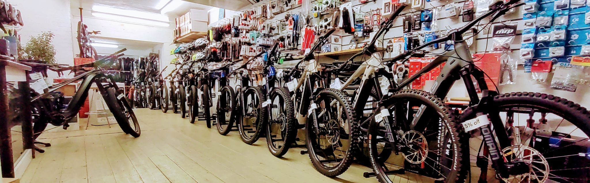

<div class="container py-5 home">
    <div class="d-flex flex-column align-items-center">
        <h1>Recherche, Achat, Livraison</h1>
        <p class="lead text-muted text-center">
            BikeShop est une la vitrine Web de la boutique de ventes vélos où vous pouvez passez des commandes 
            en lignes. Grâce à un navigateur Web, les clients peuvent rechercher un vélo qui leur convient par 
            catégorie ou marque, puis leur ajouter au panier et enfin passer une commande en utilisant une transaction 
            par carte de crédit.
        </p>
        
    </div>
</div>